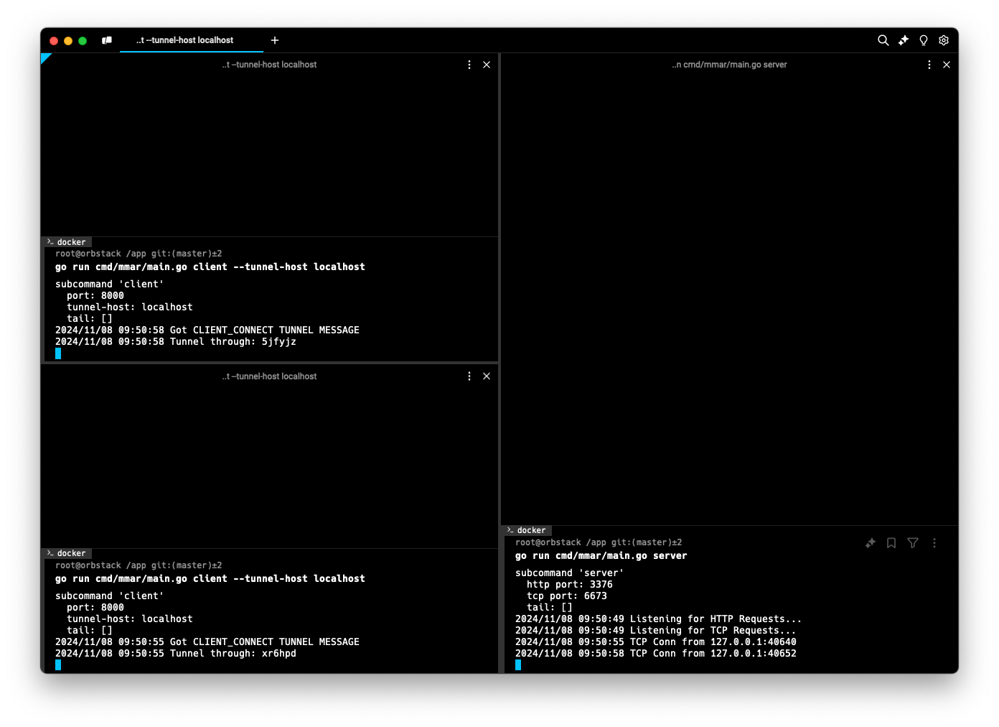

mmar - Devlog 3
This post is part of a devlog series documenting my progress building mmar, a cross-platform tunnel that exposes your localhost to the world. If you’d like to follow along from the beginning, you can find all the devlogs here.
Progress Update
In this devlog we’ll go over the implementation of a core functionality of mmar, without it, it would quite useless, and that is supporting multiple clients. In addition to optimizing the messaging protocol, and some general smaller additions and improvements to both the functionality and the codebase.
We’ll go over the major changes as there’s lots of interesting technical details, so let’s get started.
Supporting Multiple Clients
As I mentioned in the previous devlog, my general approach is to first get things working for a simple cases, and then extend/expand it to support more complex cases, allowing me to not overcomplicate things from the get go and move faster.
Leaning on that approach, until now, mmar only supported 1 client. In other words, it was only possible to create 1 tunnel, not very useful in the real world :D So naturally after making sure the functionality was somewhat stable for a single client, handling all the various cases (as we saw in the previous devlog), it was time to extend it to support multiple clients.
Unique IDs + URLs
Now that we need to support multiple clients, we need a way for the server to determine where to route the requests that are coming in from the public URL to its corresponding client tunnel. A pretty common (and clean) way to do this is by generating unique IDs and using that as subdomains for each client (tunnel) acting as the public URL that users can access the tunnel through. That’s exactly what I did.
Let’s first talk about how these unique IDs look like. I wanted them to be simple enough to not be cumbersome for the users to share or type in and at the same time I wanted to have a big enough name space to support a large number of IDs without worrying about collisions. I went with alphanumeric strings of length 6. This means that we have 26 (lowercase letters) + 10 (digits) = 36 options for each character in the string, which means the total number of possible IDs is 366 = 2,176,782,336. That’s a pretty big number of possible IDs, the probability of a collision happening is approximately 2⁄2,176,782,336 ≈ 0.000000000918787. That is extremely low and definitely fits our use case. I also implemented a mechanism to handle the unlikely event of a collision, let’s see what the code looks like:
// Imported constants:
// ID_CHARSET = "abcdefghijklmnopqrstuvwxyz0123456789"
// ID_LENGTH = 6
func (ms *MmarServer) GenerateUniqueId() string {
reservedIDs := []string{"", "admin", "stats"}
generatedId := ""
for _, exists := ms.clients[generatedId]; exists || slices.Contains(reservedIDs, generatedId); {
var randSeed *rand.Rand = rand.New(rand.NewSource(time.Now().UnixNano()))
b := make([]byte, constants.ID_LENGTH)
for i := range b {
b[i] = constants.ID_CHARSET[randSeed.Intn(len(constants.ID_CHARSET))]
}
generatedId = string(b)
}
return generatedId
}
The function checks if the generatedID is empty or already exists (collision), then starts from a random seed based on the current time, and it will repeat the process of randomly selecting from the charset to populate a slice of bytes of our defined length until a unique random ID is generated.
The code includes a few things that we haven’t seen before, what are MmarServer and ms.clients? Let’s take a look at them in the following section.
Keeping Track of Clients
Now we have a way to generate IDs, and as we mentioned we wanted them to be unique and and we also mentioned that we wanted to keep track of the clients to be able to direct requests/responses to/from them. I needed a way to store some sort of state on the server. That’s where MmarServer comes in:
type MmarServer struct {
mu sync.Mutex
clients map[string]ClientTunnel
tunnelsPerIP map[string][]string
}
This new struct stores a map clients of keys that represent IDs to the ClientTunnel instance it corresponds to. The mutex mu is used to make sure that when we are adding a new client to the clients map there can’t be a race condition causing multiple tunnels that happen to have colliding IDs to override each other.
I also added another map tunnelsPerIP, this is used to keep track of the number of clients/tunnels created from the same IP, let’s take a deeper look.
Limiting Tunnels per IP
While we want to support as many clients as possible, we also don’t want to open the door up for abuse or bad actors. So I need a mechanism to limit the number of clients that can connect and create tunnels from the same IP address. This might be an over optimization from now, but it didn’t seem like too much effort to add so why not?
The tunnelsPerIP map keeps track of the IP address and the ClientTunnel IDs created for that IP address. Currently I set the limit to 5 tunnels per IP address, this might change in the future. Whenever a new ClientTunnel is created we check if that IP has reached its limit, if it has we reject it and close the connection, otherwise we allow it and store the new tunnel ID in the map. On the flip side when a client closes a tunnel we remove it from the list corresponding to the IP address.
Now that we’ve discussed all these new components, let’s see them all in action together. I consolidated all of the necessary actions needed to be perform when creating a new TunnelClient to a new function:
func (ms *MmarServer) newClientTunnel(conn net.Conn) (*ClientTunnel, error) {
// Acquire lock to create new client tunnel data
ms.mu.Lock()
// Generate unique ID for client
uniqueId := ms.GenerateUniqueId()
tunnel := protocol.Tunnel{
Id: uniqueId,
Conn: conn,
}
// Create channels to tunnel requests to and recieve responses from
incomingChannel := make(chan IncomingRequest)
outgoingChannel := make(chan protocol.TunnelMessage)
// Create client tunnel
clientTunnel := ClientTunnel{
tunnel,
incomingChannel,
outgoingChannel,
}
// Check if IP reached max tunnel limit
clientIP := utils.ExtractIP(conn.RemoteAddr().String())
limitedIP := ms.TunnelLimitedIP(clientIP)
// If so, send limit message to client and close client tunnel
if limitedIP {
limitMessage := protocol.TunnelMessage{MsgType: protocol.CLIENT_TUNNEL_LIMIT}
if err := clientTunnel.SendMessage(limitMessage); err != nil {
log.Fatal(err)
}
clientTunnel.close(false)
// Release lock once errored
ms.mu.Unlock()
return nil, CLIENT_MAX_TUNNELS_REACHED
}
// Add client tunnel to clients
ms.clients[uniqueId] = clientTunnel
// Associate tunnel with client IP
ms.tunnelsPerIP[clientIP] = append(ms.tunnelsPerIP[clientIP], uniqueId)
// Release lock once created
ms.mu.Unlock()
// Send unique ID to client
reqMessage := protocol.TunnelMessage{MsgType: protocol.CLIENT_CONNECT, MsgData: []byte(uniqueId)}
if err := clientTunnel.SendMessage(reqMessage); err != nil {
log.Fatal(err)
}
return &clientTunnel, nil
}
A few other things that would be cool to mention was new messages being sent from the server to the client. For example, including the new unique ID in a CLIENT_CONNECT message sent to the client so they know how to access their tunnel, as well as the CLIENT_TUNNEL_LIMIT message sent when attempting to create a new ClientTunnel and that IP already reached its limit. Because of the messaging protocol we introduced in the previous devlog, adding these new messages and handling them was very straightforward, and I’m quite happy with how things turned out on that front.
Routing Requests to ClientTunnels
Once we got the different components to support multiple clients, now we need to update the logic for handling requests to determine where to forward them to. To do so we modify the serverHttp function to extract the subdomain from the request and use it to look up the ClientTunnel from the stored clients on the server. In the case where the client is not found we return an error response. Here is how that snippet looks like:
func (ms *MmarServer) ServeHTTP(w http.ResponseWriter, r *http.Request) {
log.Printf("%s - %s%s", r.Method, html.EscapeString(r.URL.Path), r.URL.RawQuery)
// Extract subdomain to retrieve related client tunnel
subdomain := utils.ExtractSubdomain(r.Host)
clientTunnel, clientExists := ms.clients[subdomain]
if !clientExists {
// Create a response for Tunnel closed/not connected
resp := protocol.TunnelErrStateResp(protocol.CLIENT_DISCONNECT)
w.WriteHeader(resp.StatusCode)
respBody, _ := io.ReadAll(resp.Body)
w.Write(respBody)
return
}
// ... remaining code ...
Now we have support for multiple clients!

Optimizing TunnelMessage Protocol
In the previous devlog we introduced a messaging protocol used for communications between the server and clients and vice versa. I mentioned that the protocol could be optimized a bit more, especially in terms of space. We saw how the prefix message type takes a significant amount of space because we used full strings to describe the message type, eg: REQUEST or RESPONSE. In addition to using \n as a delimiter separating all the different components of the TunnelMessage. A bunch of inefficiencies across the board, so I took a stab at optimizing it.
I also realized is that I didn’t add any sort of versioning to the protocol messages. Which makes it quite tricky to keep track of what messages types are defined in any given version, and could cause issues if clients attempt to send/receive messages from the server that are deprecated or vice versa. So the first step was to add a version number to messages, that way we can determine if there is a mismatch, and ask the user to upgrade the client before attempting to create a tunnel.
To do that, I represent the version as the first byte in the message, that gives us 256 possible versions. That should be more than enough for now.
The second step was to normalize the prefix message type and use numbers since that’s how they are presented in the code anyways. These numbers can be represented as a single byte (uint8) as well, giving us 256 different types of message, way more than we need, but you never know.
Just with these 2 changes alone, we went from what would previously have been 8 bytes for just the prefix RESPONSE, now we have a constant size of 2 bytes for both the version and prefix message type. Not bad.
Next, we have the length of the message data, this gives us information about how much data is being sent so we know how much to read. Since the data is quite dynamic, I opted to not restrict it to any amount of bytes. So we have a 1 or more bytes representing this number. Then finally I left the \n as a delimiter between the message data length and the actual message data so can tell when the bytes representing the length end and the actual message data begins. In the end we have the bytes representing the actual message data.
To summarize this is how the TunnelMessage looks like when it’s serialized:
+---------+------------+---------------------+------------+--------------------+
| Version | Msg Type | Length of Msg Data | Delimiter | Message Data |
| (1 byte)| (1 byte) | (1 or more bytes) | (1 byte) | (Variable Length) |
+---------+------------+---------------------+------------+--------------------+
A great side effect of this was how much the code got cleaned up after normalizing the message types. Previously, we had a switch statement with cases when serializing/deserializing the TunnelMessage to determine it’s type, and every time we added a new type we needed to add another case statement. Now, since we are using the uint8 (1 byte) directly when dealing with the message types, we can do cool things like this to determine what the message type is and if it valid:
const (
REQUEST = uint8(iota + 1)
RESPONSE
CLIENT_CONNECT
CLIENT_DISCONNECT
CLIENT_TUNNEL_LIMIT
LOCALHOST_NOT_RUNNING
)
func isValidTunnelMessageType(mt uint8) (uint8, error) {
// Iterate through all the message type, from first to last, checking
// if the provided message type matches one of them
for msgType := REQUEST; msgType <= LOCALHOST_NOT_RUNNING; msgType++ {
if mt == msgType {
return msgType, nil
}
}
return 0, INVALID_MESSAGE_TYPE
}
Now, anytime we add a new message type we just make sure we are looping from the lowest number to the highest number in the defined message types. Here is how the new and improved serializers/deserializers look like:
func (tm *TunnelMessage) serializeMessage() ([]byte, error) {
serializedMsg := [][]byte{}
// Determine and validate message type to add prefix
msgType, err := isValidTunnelMessageType(tm.MsgType)
if err != nil {
// TODO: Gracefully handle non-protocol message received
log.Fatalf("Invalid TunnelMessage type: %v:", tm.MsgType)
}
// Add version of TunnelMessage protocol and TunnelMessage type
serializedMsg = append(
serializedMsg,
[]byte{byte(constants.TUNNEL_MESSAGE_PROTOCOL_VERSION), byte(msgType)},
)
// Add message data bytes length
serializedMsg = append(serializedMsg, []byte(strconv.Itoa(len(tm.MsgData))))
// Add delimiter to know where the data content starts in the message
serializedMsg = append(serializedMsg, []byte{byte(constants.TUNNEL_MESSAGE_DATA_DELIMITER)})
// Add the message data
serializedMsg = append(serializedMsg, tm.MsgData)
// Combine all the data with no separators
return bytes.Join(serializedMsg, nil), nil
}
func (tm *TunnelMessage) deserializeMessage(reader *bufio.Reader) error {
msgProtocolVersion, err := reader.ReadByte()
if err != nil {
return err
}
// Check if the message protocol version is correct
if uint8(msgProtocolVersion) != constants.TUNNEL_MESSAGE_PROTOCOL_VERSION {
return INVALID_MESSAGE_PROTOCOL_VERSION
}
msgPrefix, err := reader.ReadByte()
if err != nil {
return err
}
msgType, err := isValidTunnelMessageType(msgPrefix)
if err != nil {
// TODO: Gracefully handle non-protocol message received
log.Fatalf("Invalid TunnelMessage prefix: %v", msgPrefix)
}
msgLengthStr, err := reader.ReadString('\n')
if err != nil {
return err
}
// Determine the length of the data by stripping out the '\n' and convert to int
msgLength, err := strconv.Atoi(msgLengthStr[:len(msgLengthStr)-1])
if err != nil {
// TODO: Gracefully handle invalid message data length
log.Fatalf("Could not parse message length: %v", msgLengthStr)
}
msgData := tm.readMessageData(msgLength, reader)
tm.MsgType = msgType
tm.MsgData = msgData
return nil
}
So much nicer!
Thanks!
If you made it to the end, thanks for reading! Hopefully you’re enjoying following along this journey. Until next time!